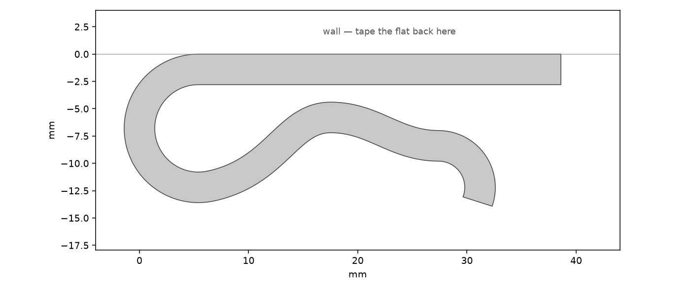
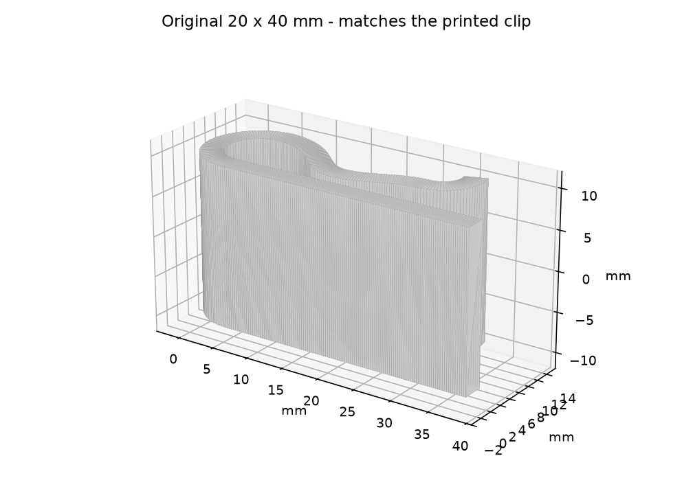
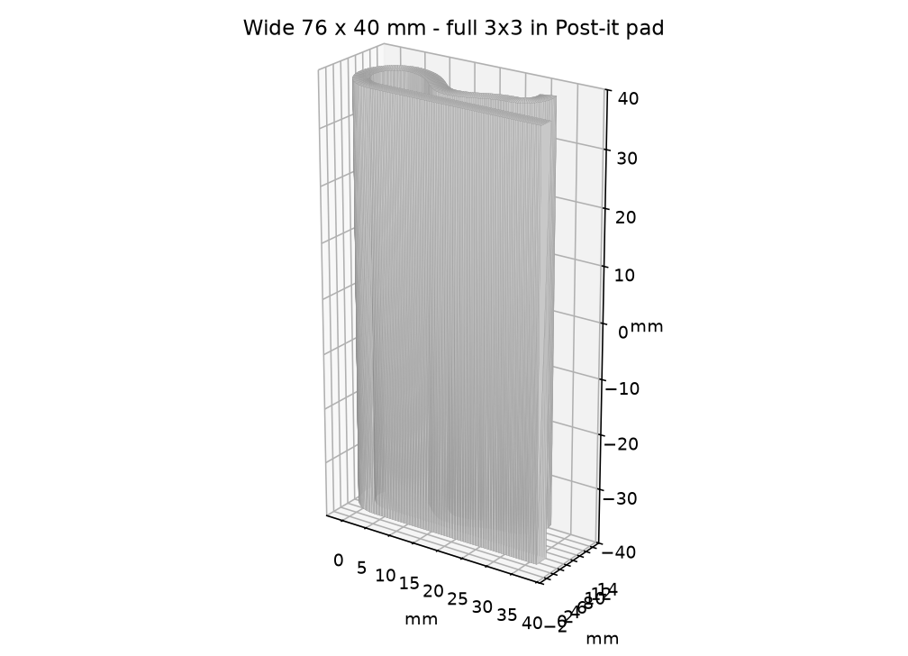

Post-it wall clip
Reverse-engineered reprint of the gray hairpin clip that holds Post-it notes on a wall.



Download 20 mm STL Download 76 mm STL
- Lay the S-profile on the bed (width is Z). No supports.
- 0.2 mm layers, 3–4 walls. PLA matches the original; PETG is springier.
Mount
- Tape the long flat back to the wall.
- Slide notes under the wavy arm from the open lip.
To change size, edit ClipParams in generate.py and run python3 generate.py.